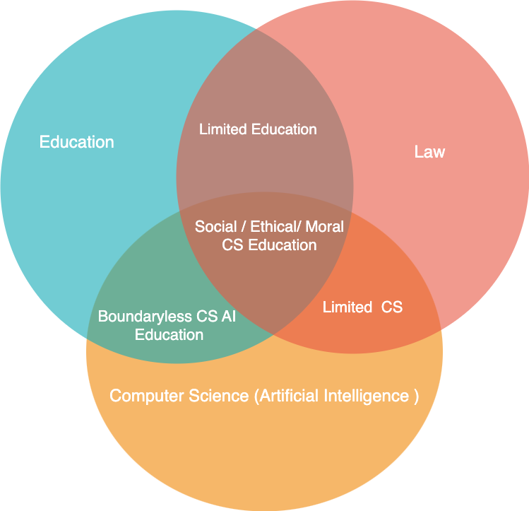

Further Research Topics
-
Policy, Process, Open Data & Artificial Intelligence
Are Open data Policy and Process the biggest hurdle for the
development of third world countries? Why do some countries have
less innovations despite the several universities and PHD
candidates? How Data helps to know the blur areas in terms of
society development?
AI Era as the "Dark Age" of Human civilization. How an education
institute should equip students with required knowledge and skills
to identify either fake or original data, information, knowledge?
AI can make a person 's emotions survive even after their physical
body death. If a person uses some personal assistance AI/ Robot,
then AI gains knowledge, adapts and improves over time like a
human being that matches with their personality. AI uses previous
data, knowledge and makes decisions and predicts. How do these
personal assistants AI affect society and families even after a
person's death?
- Computer Science & AI , Education & Law
How Law affects the Education domain in Computer Science
How Law affects the school education
how law should be - Open to Innovation Drives
how Law restricts the AI technologies innovations?
The picture shows the relationship between Education, Law and
Computer Science Artificial Intelligence

- Spirituality and Computer Science
Why does the future education need to focus on the Consciousness
level of human beings? How Spirituality helps to achieve
Consciousness level?
How Computer Science technologies can be used for Spirituality and
ethical education?
Note: Spirituality is always to find Truth. Mindfulness is the act
of being focussed about the present moment without Judging. Just
to See but no Judgement. Mindfulness is the core component for
Spirituality. Religion may be biased towards subjects and have
political influence. However Spirituality is never baised, always
treated equal to all living beings and seeks truth for the purpose
of life. Life can be in any form like human beings, dogs, cats
etc...
Notes ...
Politics, Power & Education
Education is one of the most powerful green weapon tools through
which you can construct or deconstruct society. If education is
used as a tool then it can act like a silent poison to deceive and
discourse in a society. The discourse brings a new course
structure order in a society.
The purpose of education is to know about yourself and seek truth.
Being educated is not to accumulate wealth, power, fame but to
identify yourself differently and seek truth that leads to bliss.
Education is aligned with ethical and nature values, and abides
with nature rules.
Politics is a way to Balance subjects (Words, statements ...) or
to compare between subjects.
Power is the external force generated from Politics. Education
tools are commonly used for politics or power.
Every society has a certain Power Structure. THere is no society
as Free Society.
Philosophy & Research
Research is studying and searching again data, information and
knowledge to refine perceived knowledge through systematic study
in an evidence way.
Philosophy is a lens and perception to view and perceive any
subject / problem by having a certain prejudiced belief and value
system. Philosophers set a different path, courses with certain
principles and values embedded in their life journey. Each one of
us is a philosopher having a different philosophy of life.
Philosophy is the beginning stage for any education and subject
disciplines guided by core principles and values. Philosophy is at
the "Root level of Education" and human civilization that
discourses society.
Theory is the repetition of any identified subject. Model is the
proven solution to the problem.